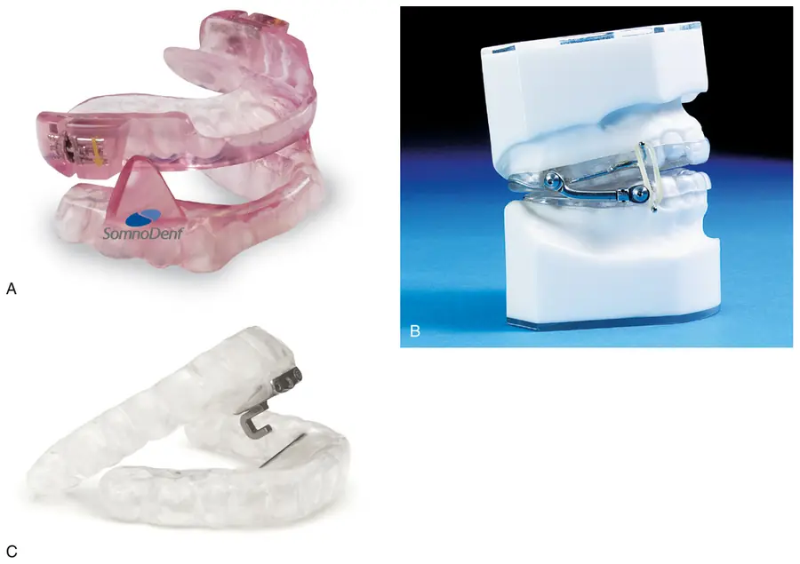

نسخه استخراجشده؛ ترجمه یا تأیید علمی انجام نشده است. وضعیت: captured
مرد ۵۲ سالهای با BMI ۳۶ برای سایش شدید دندانها آمده. همسرش میگوید خروپفش از پشت در بسته هم شنیده میشود و گاهی نفسش چند ثانیه قطع میشود و با خرخر برمیگردد. صبحها سردرد دارد و سر کار چرت میزند. به چه شک میکنی؟
به آپنهی انسدادی خواب (OSA). در خواب، راه هوایی فوقانی بارها نیمهبسته یا کاملاً بسته میشود، در حالی که بیمار هنوز برای نفس کشیدن تلاش میکند.
در آپنهی مرکزی مشکل از فرمان تنفسی مغز است نه انسداد، و بیشتر همراه بیماریهایی مثل نارسایی قلب دیده میشود.
پیامدها: خوابآلودگی روز و خطر تصادف، فشار خون بالا، سکتهی مغزی، آریتمی، نارسایی قلب و سندرم متابولیک.
نکتهی طلایی: تقریباً همهی بیماران OSA خروپف میکنند، اما بیشتر کسانی که خروپف میکنند OSA ندارند.
کار تو پیدا کردن بیمار مشکوک و ارجاع اوست؛ تشخیص با پزشک خواب است.

تشخیص با پلیسومنوگرافی (PSG) یا تست خواب در منزل است. AHI شمار آپنه و هیپوپنه در هر ساعت خواب است: بیش از ۵ همراه علامت یعنی OSA؛ ۵ تا ۱۵ خفیف، ۱۵ تا ۳۰ متوسط، بیش از ۳۰ شدید.